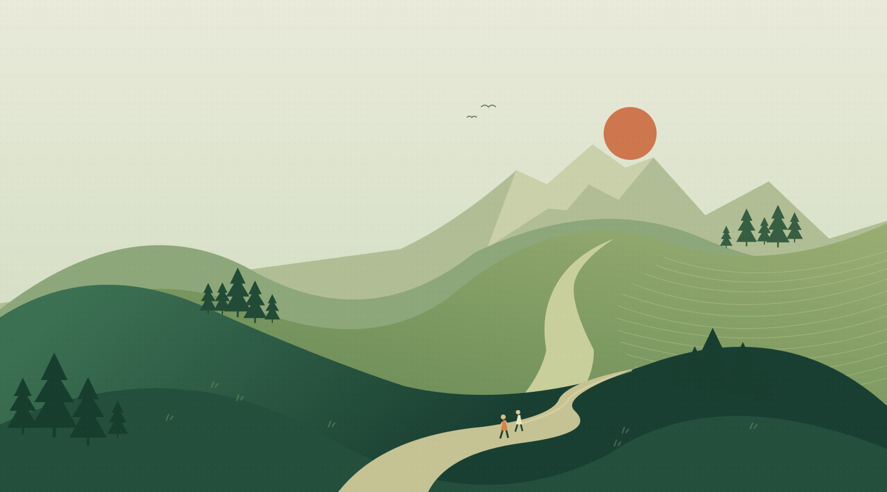

Your pace is the pace.
No leaderboards. No personal bests. Just one foot, then the other.

FRESH AIR. NO FINISH LINE.
A walking club for the long way home.
Good company. Open paths.
Time to look up.
YOU DON’T HAVE TO GO FAR.
Not every walk needs a summit. Sometimes it’s a bend in the river, a thermos on a wall, or a conversation that finds its own way.
Fieldwork is an idea for a different kind of walking club. Small adventures, an easy pace, and plenty of room to stop.
Find a walk that feels like you ↗THREE WAYS TO GET OUT THERE
Pick the feeling.
We’ll show you the way.
Imagined walks for this concept. Distances are illustrative; these are not navigation maps or scheduled outings.
The bend where the water slows.
Bring something good for
lunch.
A FEW THINGS WE WALK BY
No leaderboards. No personal bests. Just one foot, then the other.
The stops are part of the walk. A warm cup tastes better out here.
Take your time. Take your litter. Leave the good bits for the next person.